Week 10 | Molding and Casting | Apr 18
Fab Academy 2018 | Archive
Sketch of Final Project
This week was for making a moulde. I wanted to make a moulde with initial letters of my name and last name. I made a design in fusion, but after opening it in fabmodules it's dimention changed from (mm) to (inch).
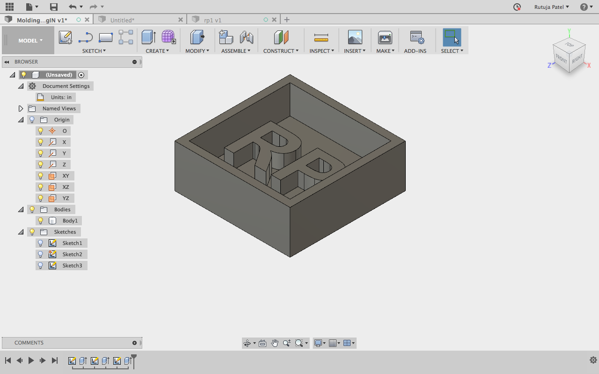
I made a design in fusion in (mm) which after opening in fabmodules the dimention changed into (inches). Aaditya suggested me to first convert the file into (.step) format from fusion and then open in Rhino and convert it into (.stl) format. This time also it didn't work.
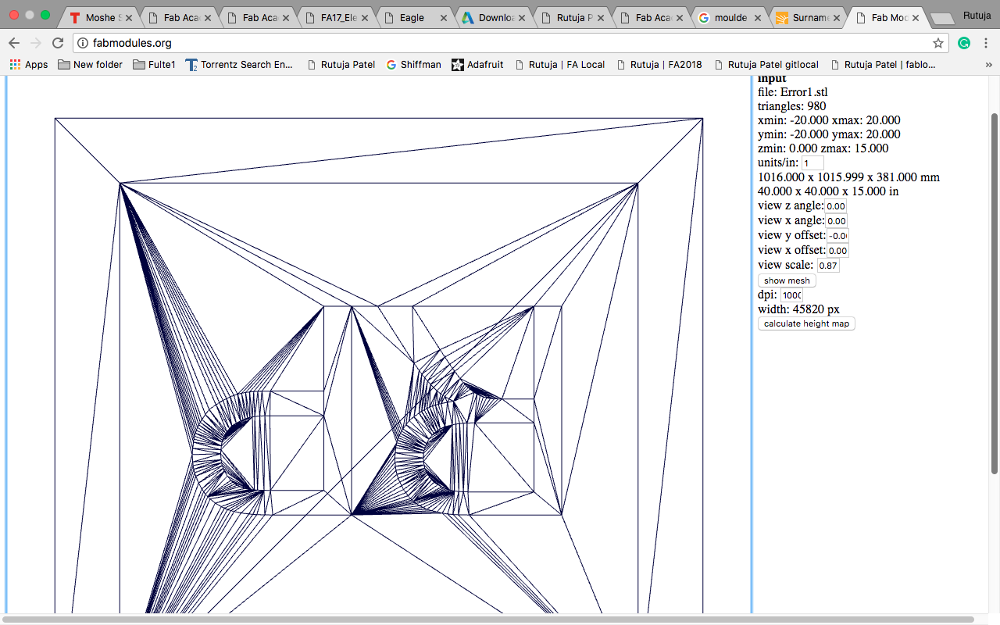

So I made the design in (inches) and converted into (.stl) format from Rhino. This time the design was opening in fabmodules, the mash and size of the design was also correct but was not able to calculat the height map.
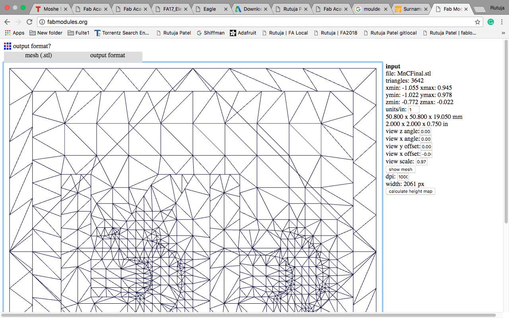
Because of all these erors I changed my design. I made the same design in (inches) but without borders.

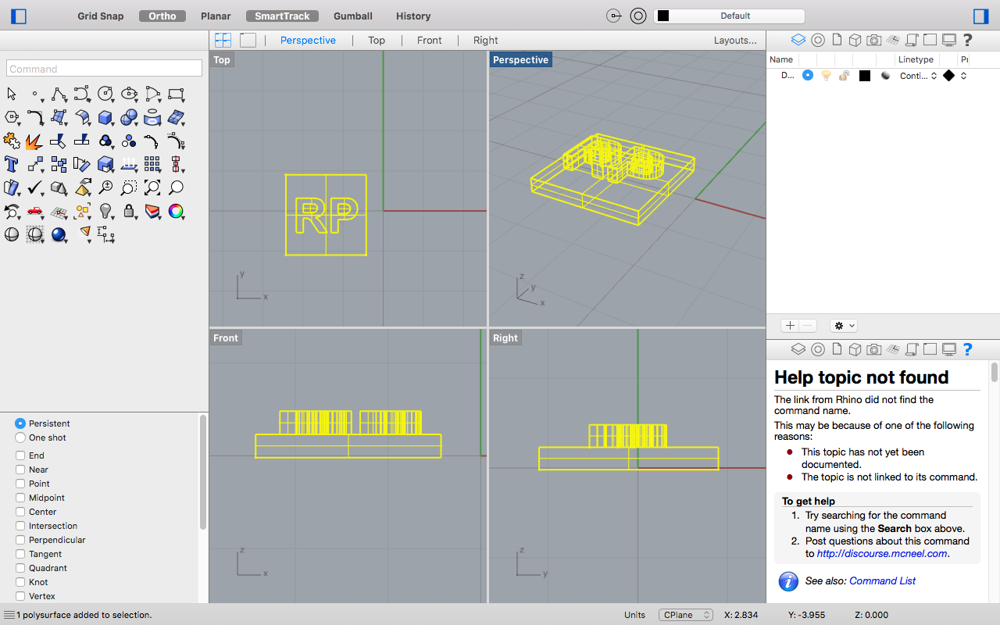
This design was perfectly working in fabmodules. Dimention, Mesh and Height Map was also correct.
The process in fabmodules was (1/8)wax mill roughcut.
At first I tested a used wax, it was cutting perfectly. Finished Rough Cut.
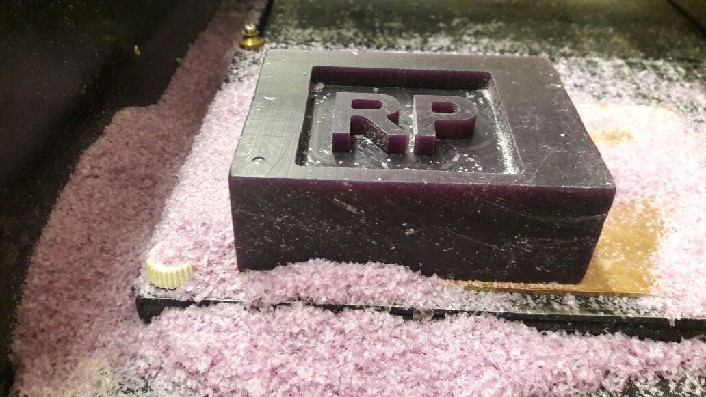
Now for Finish cut, parameters given in the module should be same. I the same parameters but still the machine did not cut properly. It started cutting before the origin so I stopped the machine. The letters were propery cut so I continued with making the moulde.
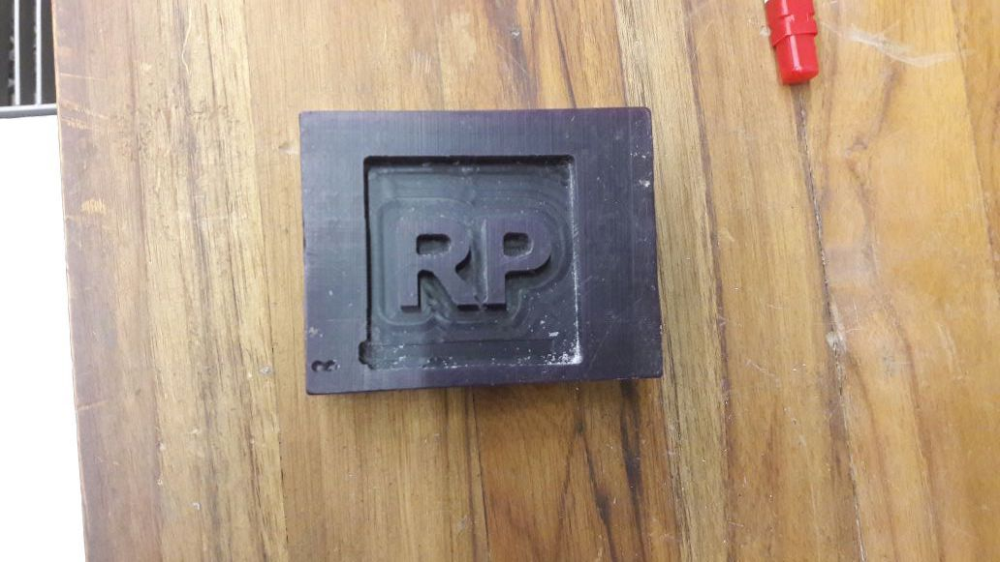
The next part is to make the mould out of the wax. I sticked the plywood pieces around the wax.
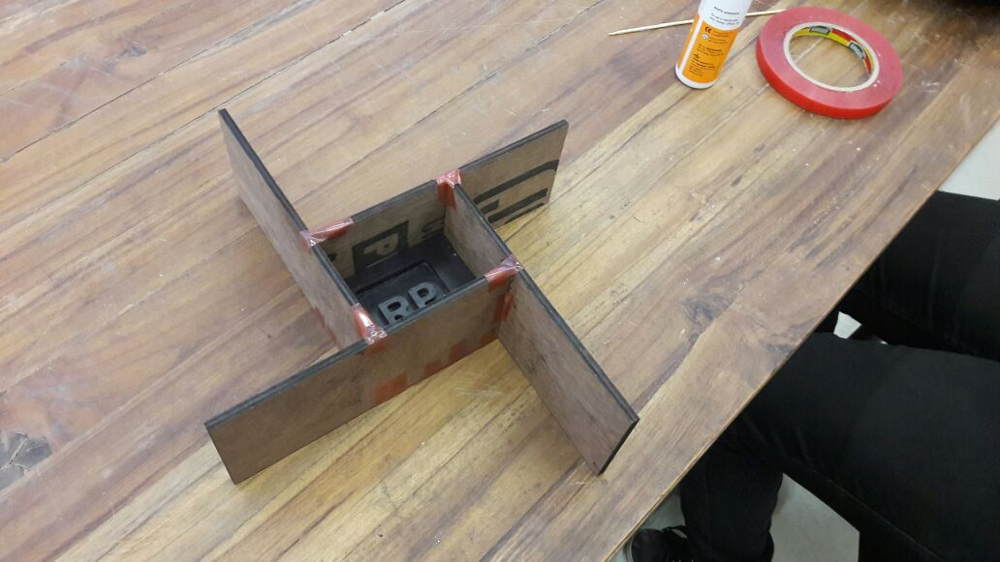
Now I proceeded to make the solution for moulde. Gaurav guided me in making it.
- Two rubber solutions are to be used to make a moulde. Steps for making a rubber moulde:
- Apply oil and greece in the wax
- Take both the solution in 1A:2B concentration.
- Stir it for 3 minutes
- Gentelly spill the solution on the moulde.
The material takes 16 hours to become solid
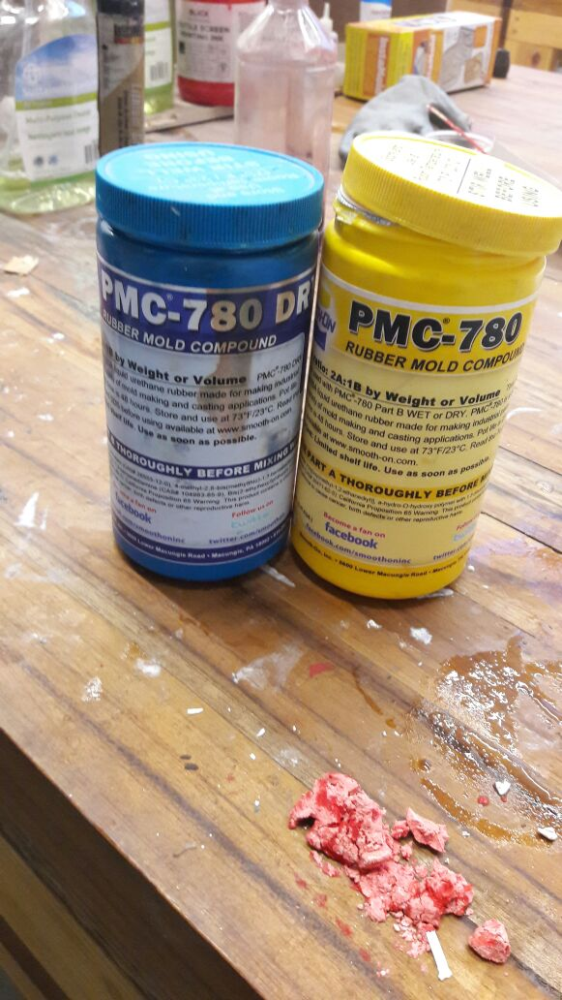

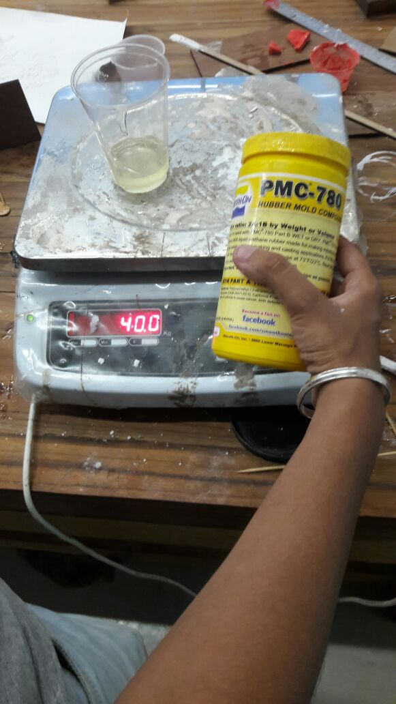
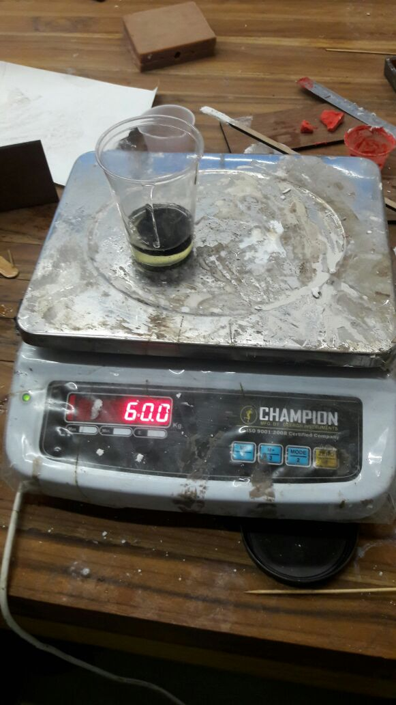
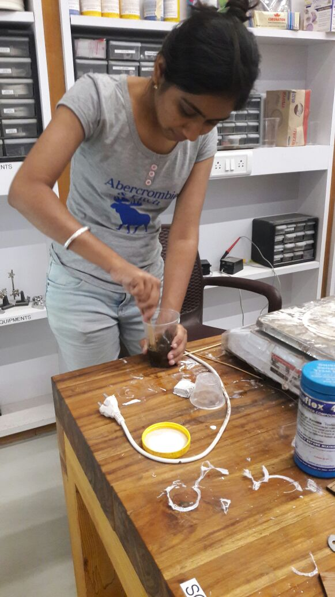
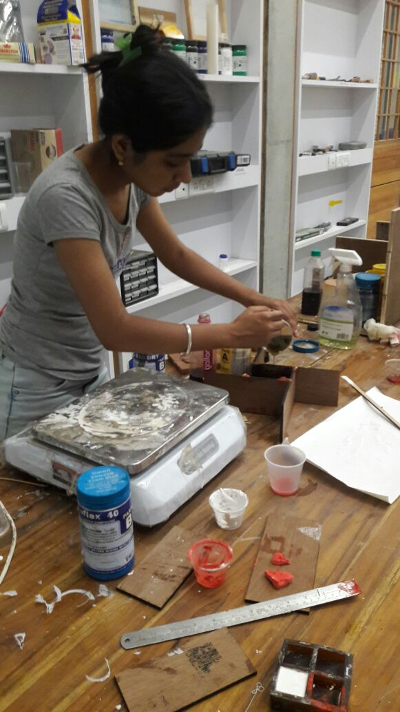
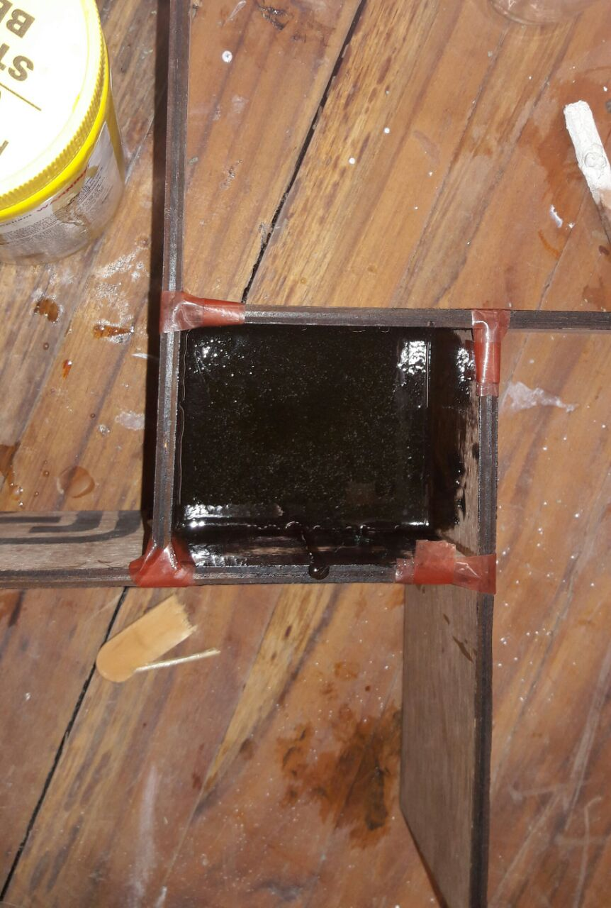
I made a PVC Cast and a plstic cast


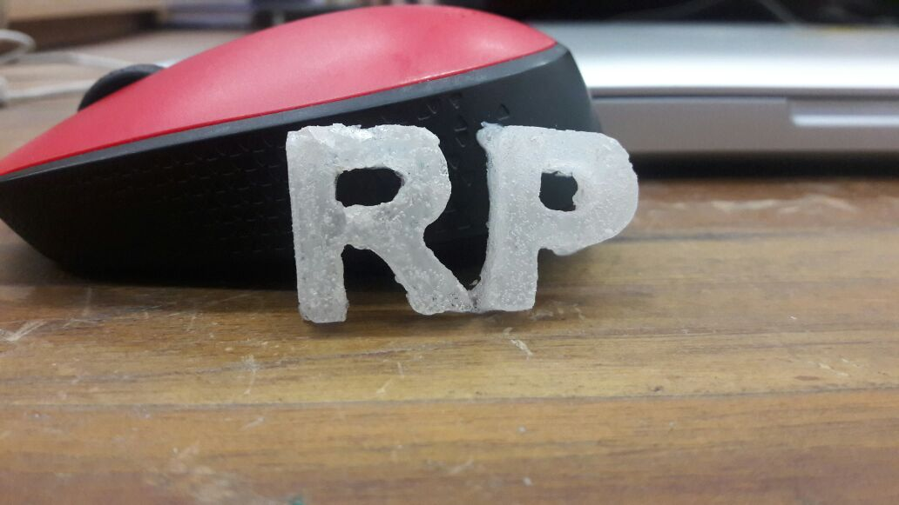